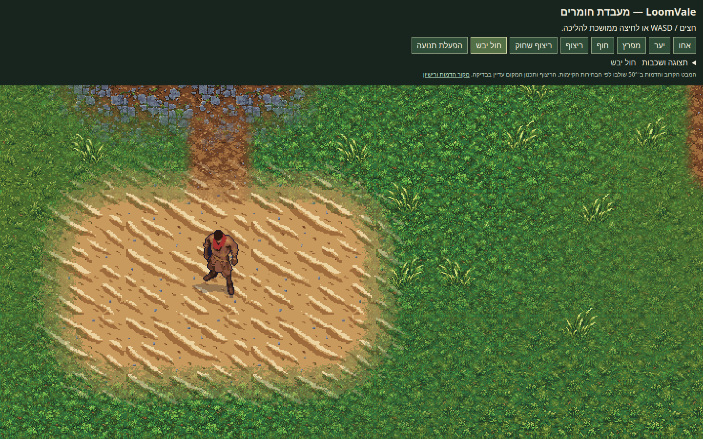
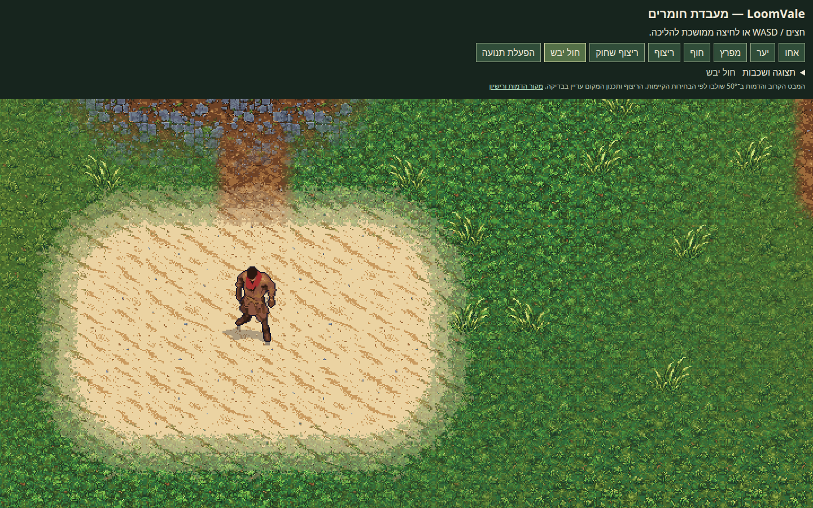

ללכת בעולם המעודכן · מקור הדמות ורישיון
תיקון למשוב על החול שנראה כעננים, תחושת הדמות המודבקת והתאמת הצעדים לתנועה. אלו צילומים והקלטה מתוך העולם המחובר.


המראה של הדמות, גודלה וזווית ה־50° נשמרו. ההליכה עדיין מוצגת כתנוחות פיקסל נפרדות ובשמונה כיוונים; אין כאן טענה לנעילת רגל מושלמת בכל זווית. הריצוף ותכנון המקום ממשיכים להמתין לסקירה שלהם.